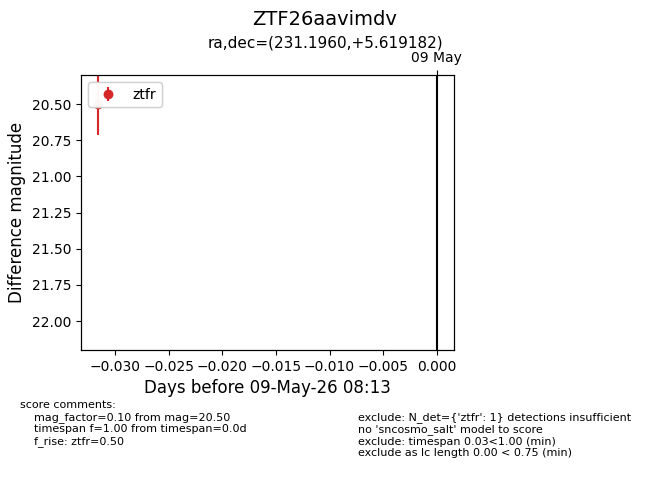
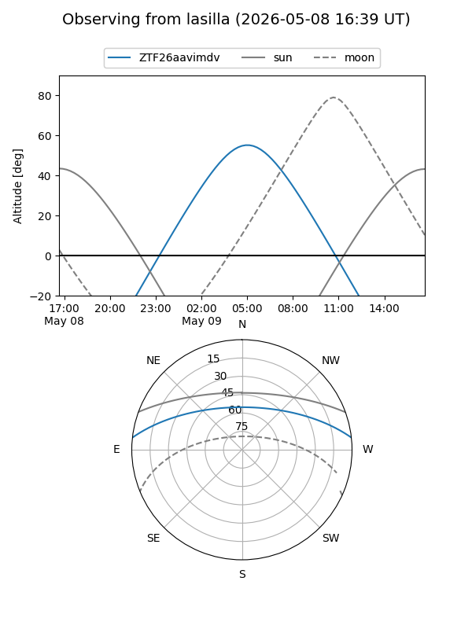
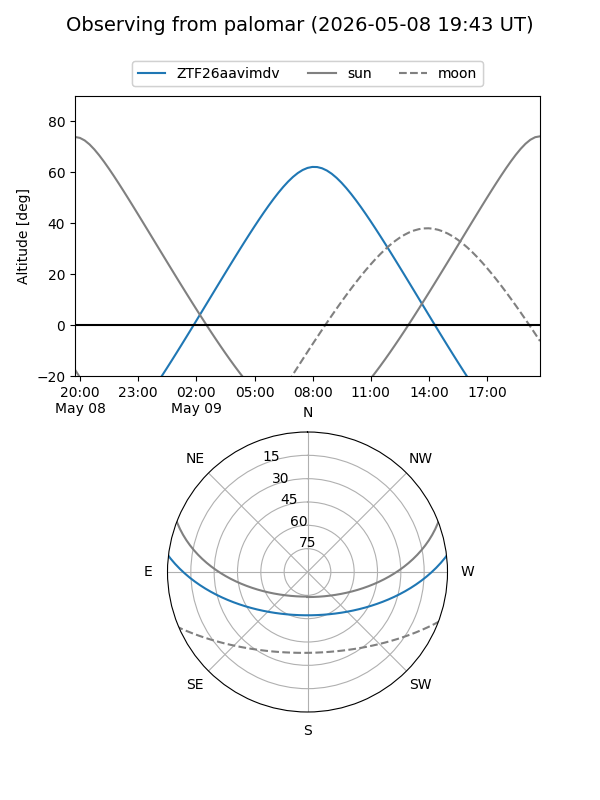

ZTF26aavimdv
Target ZTF26aavimdv at 2026-05-09 08:15
Aliases and brokers:
FINK: link
Lasair: link
ALeRCE: link
alt names
ZTF26aavimdv (ztf,fink_ztf)
Coordinates:
equatorial (ra, dec) = 231.1960,+5.61918
equatorial (HMS+DMS) = 15:24:47.04,+05:37:09.06
galactic (l, b) = (9.4012,+47.67894)
Flags:
Photometry:
last ztfr=20.50
1 ztfr detections
Lightcurve

Visibility


Additional plots